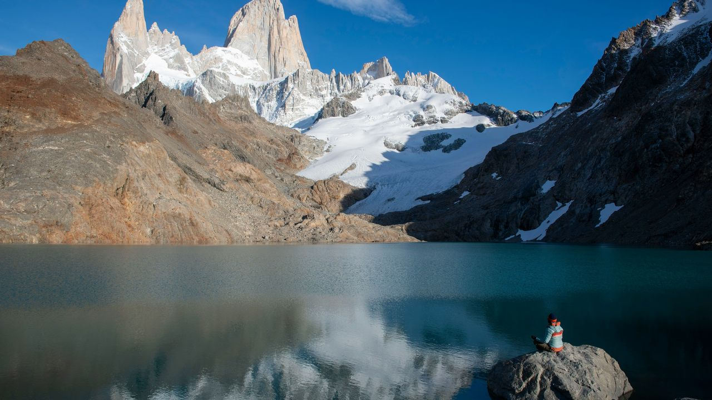

Checking your account…
Before you go

Passports and visas
- Your passport should be valid for at least six months after your return date. Many countries check this at the border.
- Europe's Schengen Area (France, Italy, Germany, Spain, Greece, Austria and more) allows most visitors 90 days in any 180-day period.
- China, India and Vietnam usually require a visa or e-visa arranged before you fly. Rules change often, so check each country's official government site.
- Register your trip with your government's traveler program (for U.S. citizens, the State Department's STEP).
Money and insurance
- Bring a debit card with no foreign transaction fees and a backup card kept in a separate bag.
- Buy travel insurance that covers your activities. Skiing, trekking above 4,000 m and scuba diving are often excluded unless you add them.
Packing list for a month
| Category | Every trip | Extra for your trip type |
|---|---|---|
| Clothes | 5 shirts, 2 pants or shorts, 7 pairs of socks and underwear, 1 warm layer, rain jacket | Party: one going-out outfit. Ski: base layers, ski socks, neck gaiter |
| Gear | Daypack, reusable water bottle, padlock for hostel lockers, quick-dry towel | Nature: broken-in hiking boots, headlamp, trekking poles |
| Tech | Phone, universal plug adapter, power bank, offline maps downloaded | Culture: a translation app with offline language packs |
| Health | Small first-aid kit, sunscreen, any prescriptions in original bottles | Nature: blister care and water purification tablets |
Cultural dos and don’ts
Southeast Asia
- Do cover your shoulders and knees at temples.
- Don’t touch anyone’s head or point your feet at people or Buddha images.
- Never insult the monarchy in Thailand. It is a serious crime.
Europe
- Do greet shopkeepers when you walk in (“Bonjour,” “Buongiorno”).
- Don’t expect dinner before 9 p.m. in Spain.
- Tipping is small: round up or leave 5–10%.
Japan, Korea and China
- Do take your shoes off when you see slippers at the door.
- Don’t stick chopsticks upright in rice; it resembles a funeral offering.
- Don’t tip in Japan. It can be seen as rude.
Latin America
- Do learn basic Spanish (or Portuguese in Brazil). It goes a long way.
- Don’t flash phones or jewelry on busy streets at night.
- Do carry small bills. Taxis and street stalls often can't make change.
Nepal and India
- Do use your right hand to give and receive things.
- Do walk clockwise around Buddhist stupas and temples.
- Don’t wear shoes inside temples or someone’s home.
Greece and Turkey
- Do cover your shoulders and knees in mosques. Women should bring a scarf for their hair.
- Don’t show someone an open palm in Greece. It is an old insult.
- Do accept tea when offered in Turkey. Saying no can seem cold.
Swap-in stops
If you want to change things up, these stops fit into the same regions without messing up the rest of the route:
- Southeast Asia: Chiang Mai, Thailand, for night markets and cooking classes
- The Alps: Innsbruck, Austria, a city with ski areas a tram ride away
- Patagonia: Puerto Varas, Chile, in the lake district north of the route
- Western Mediterranean: Barcelona, Spain, between Paris and San Sebastián
- Mexico & Guatemala: Lake Atitlán and Antigua, Guatemala